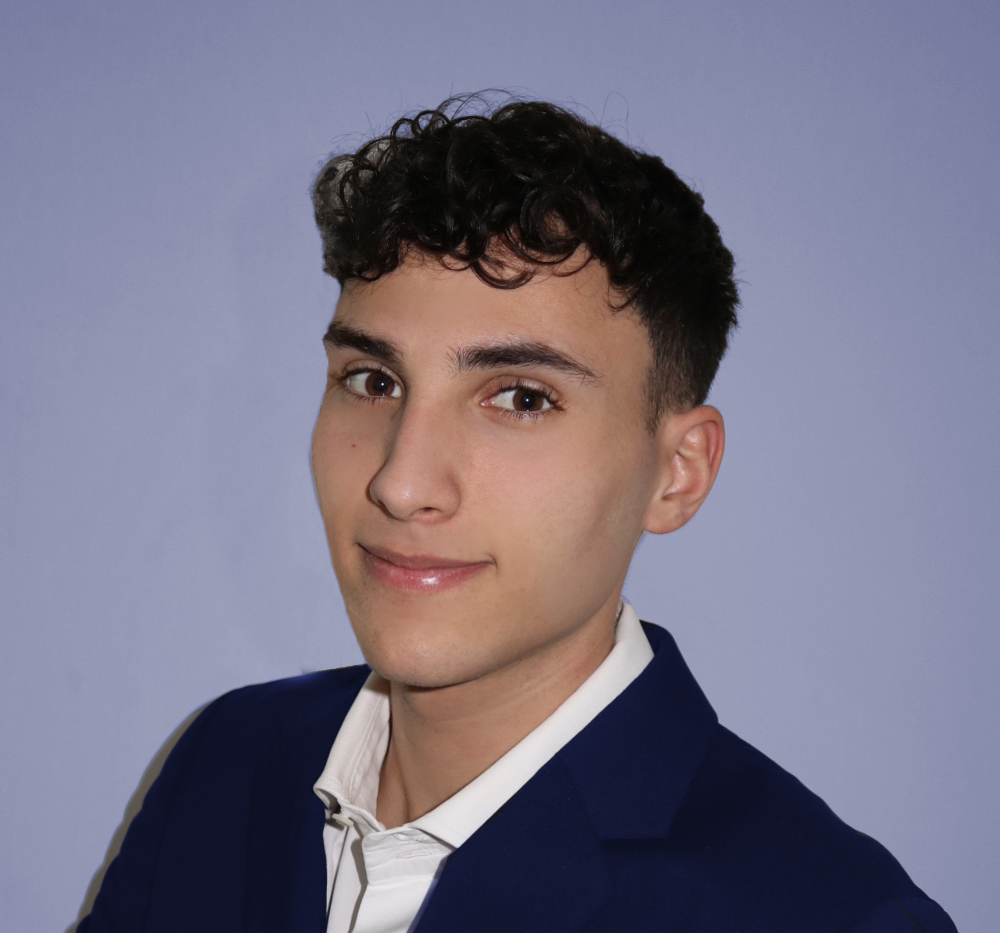

<div class="container-fluid">
    <div class="container d-flex justify-content-center align-items-center">
        <div id="ipad">
            <div class="screen1">
                <div id="screen">
                    <div class="information">
                        <div class="ipad-top pt-3 d-flex flex-row justify-content-between">
                            <div class="exit">
                                <i class="fas fa-chevron-left ps-3 text-primary" [routerLink]="['/']" routerLinkActive="active"></i>
                            </div>
                            <div class="title">
                                <p class="text-white">
                                    About Me
                                </p>
                            </div>
                            <div class="set">
                                <div class="wifi">
                                    <i class="fa-sharp fa-solid fa-wifi text-white pe-1"></i>
                                </div>
                                <p class="text-white">80%</p>
                                <div class="buttery">
                                    <i class="fa-solid fa-battery-three-quarters text-white ps-1 pe-3"></i>
                                </div>
                            </div>
                        </div>
                        <div class="description px-4 mt-3">
                            <div class="description-top">
                                <h3>My description</h3>
                                
                            </div>
                            <hr>
                            <p class="mt-3">
                                I am a Junior Full-Stack Developer and I have always studied advertising graphics using programs like Illustrator, Photoshop and indesign, but at the same time I was increasingly dazzled by the world of coding. After graduating from the Artistic High School Caravaggio with "graphic" studies, I wanted to change course and undertake a course of study in the field of programming.
                                <br>
                                <br>
                                To get into the world of programming I decided to take a 6-month intensive course at Epicode that gave me the chance to become a Full-Stack Developer. I have a solid knowledge base in: HTML, CSS, JavaScript, typescript, Angular, Bootstrap, SASS, Java, Spring Boot, PostgreSQL and Postman. I am currently looking for opportunities to grow, develop and consolidate my skills in this field.
                                <br>
                                <br>
                                I am a proactive and flexible person who can work both in a group and independently. And I am always ready to face new and increasingly difficult challenges, but above all always ready to share my knowledge with others.
                            </p>
                        </div>
                    </div>
                </div>
            </div>
        </div>
    </div>
</div>
